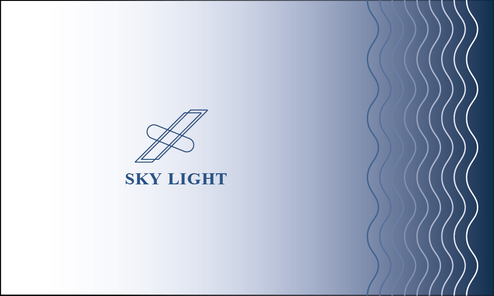

GRAPHIC DESIGN · BRAND IDENTITY · 2023
SKY LIGHT
Illustrator · Photoshop · Blender
Illustrator · Photoshop · Blender
授宇晟海事有限公司委託，設計 SKY LIGHT 公司 logo， 色彩系統選用深海藍與高亮米白，呼應公司主業：遠洋通訊與衛星定位。 The SKY LIGHT logo merges a satellite dish silhouette with a deep ocean color, visualising the bridge between aerial data relay and maritime operations. The wordmark is set in a geometric sans with fine tracking.



115 × 230 mm 規格信封，以流動波浪曲線象徵遠洋航務，封口搭配品牌 LOGO ，展現精準與海洋的視覺連結。

針對公司車設計的全車身貼膜方案。以 logo 深海藍為底， 衛星訊號大圖延伸至車側，大面積留白強化速度感與現代科技形象。
在 Blender 建模的車身貼膜全尺寸預覽 — 360° 拖曳旋轉縮放檢視效果。